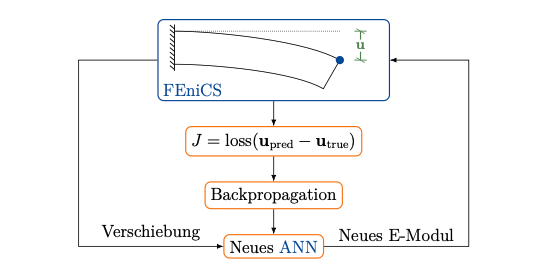
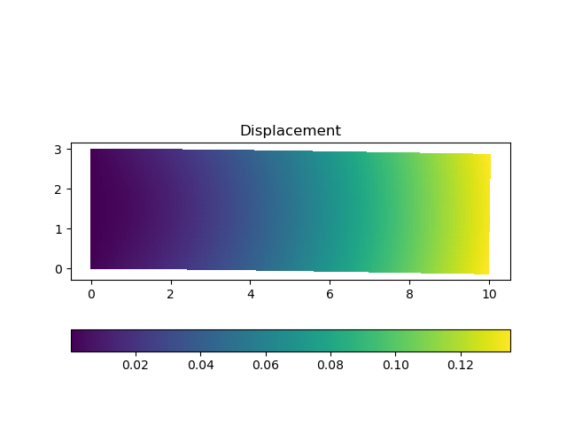
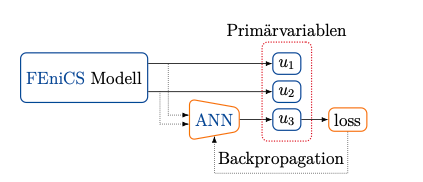

プロジェクトの目標
FEniCSとは多くの研究機関で共同で開発された有限要素法(FEM)のフレームワークである。支配方程式を直接入力しメッシュと関数空間を指定することで数値解析をすることができるため、研究目的で非常に有用なツールである。 しかし、支配方程式が完全に既知であることが前提となっており、化学反応や乱流などの未知、または非常に複雑な物理現象においてはその式が明らかでないことが多い。 そこで、機械学習を用いてその未知の項を予測する手法がMitusch et al.などから提案されていた。 しかしながら、FEniCSは専用のUFLオブジェクトを用いて関数空間を表現しており、直接FEniCSの計算結果をPyTorchに受け渡すことができない。ゆに、そのインターフェイスの開発が求められていた。

成果
FEniCSとPythonをつなぐフレームワークとしてFEniCS adjointが開発されており、それを用いて独自のクラスで機械学習のニューラルネットワークを規定しニュートン法で最適化するモデルが既に公開されていた。 このモデルの関数を変更することで、懸念とされていたFEniCSとPyTorch間のデータの受け渡しを可能とした。 学習自体はPyTorchで行われるため、公開されているモデルよりも多種多様な損失関数やチューニングが可能となっている。
はりのヤング率の予測
この例では自重によってたわむ"はり"のヤング率を予測している。はりの右上の点の変位をインプット、ヤング率をアウトプットとするモデルを作成し、正しいヤング率を用いて計算した偏位を教師データとして学習を行った。
学習は300エポックかけて行われた。正しいヤング率の100000MPaに対し、予測値は129998.7344MPaとなった。これは自重のみが考慮され、変位が非常に小さいために多少の誤差が残っているものと思われる。
化学反応率の予測
この例では化学物質AとBがシリンダーから放出され、それらが触れ合うとその濃度に応じて化学反応が起き、物質Cが生成される。その化学反応を説明する項をニューラルネットワークに置き換えて予測するのが目標であった。 それぞれの物質の濃度を試行関数としu_1,u_2,u_3で表した時、Computational Graphは以下のようになる。
ここで解くべき微分方程式は以下の通りである。 \(R_{\theta}\left(u_{1}, u_{2}\right)\)はニューラルネットワークまたは正しい化学反応式で置き換えられる。
\begin{align} \frac{\partial u_{1}}{\partial t}+w \cdot \nabla u_{1}-\nabla \cdot\left(\epsilon \nabla u_{1}\right) &= f_{1}-R_{\theta}\left(u_{1}, u_{2}\right) \quad &&\text { in } \Omega \times(0, T)\\ \frac{\partial u_{2}}{\partial t}+w \cdot \nabla u_{2}-\nabla \cdot\left(\epsilon \nabla u_{2}\right) &= f_{2}-R_{\theta}\left(u_{1}, u_{2}\right) \quad &&\text { in } \Omega \times(0, T)\\ \frac{\partial u_{3}}{\partial t}+w \cdot \nabla u_{3}-\nabla \cdot\left(\epsilon \nabla u_{3}\right) &= f_{3}+R_{\theta}\left(u_{1}, u_{2}\right) \quad &&\text { in } \Omega \times(0, T)\\ \frac{\partial u_{i}}{\partial n} &= 0 \quad &&\text { on } \partial \Omega \times(0, T) \end{align}学習結果は以下のようである。
非線形性を有した化学反応項を予測するため、学習はハイパーパラメータに強く依存している。上記結果では物質Cの生成量が多く見積もられているが、そのオーダーは等しく、適切に学習が行われたことを示している。